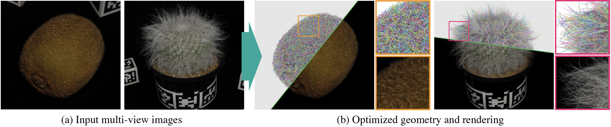

Kenji Tojo Ariel Shamir Nobuyuki Umetani Bernd Bickel
SIGGRAPH Asia 2026 / ACM Transactions on Graphics

Paper / Code / Rasterizer / Dataset / Images / Videos
Faithfully capturing diverse real-world objects with fuzzy, anisotropic structures—such as hair, fur, fibers, and textiles—for efficient real-time visualization remains challenging. Recent radiance field reconstruction methods capture these structures from multi-view images using translucent volumetric primitives such as 3D Gaussians rather than opaque low-dimensional primitives (e.g., triangles, line segments, and polylines), thereby limiting compatibility with standard depth-tested rasterization, reflection modeling, and physical simulation. We present an inverse rendering method for reconstructing fuzzy geometry using explicit line segments, which are rasterized on a subpixel grid for anti-aliasing to reproduce a semi-transparent appearance. While straightforward to render, optimizing numerous line primitives to match target images poses a significant challenge. We address this by introducing a stochastic differentiable rasterizer for line segments that produces informative gradients with respect to vertex positions, attributes, and discrete connectivity.
@article{tojo2026lines,
author = {Tojo, Kenji and Shamir, Ariel and Umetani, Nobuyuki and Bickel, Bernd},
title = {Inverse Rendering for Modeling with Line Primitives},
year = {2026},
issue_date = {December 2026},
publisher = {Association for Computing Machinery},
volume = {45},
number = {6},
url = {https://doi.org/10.1145/3842527},
doi = {10.1145/3842527},
journal = {ACM Trans. Graph.},
month = dec,
articleno = {200},
numpages = {13}
}We thank the anonymous reviewers for their valuable feedback. This work was partly conducted while the first author was at the University of Tokyo, where he was supported by JSPS KAKENHI Grant Number 23KJ0699.